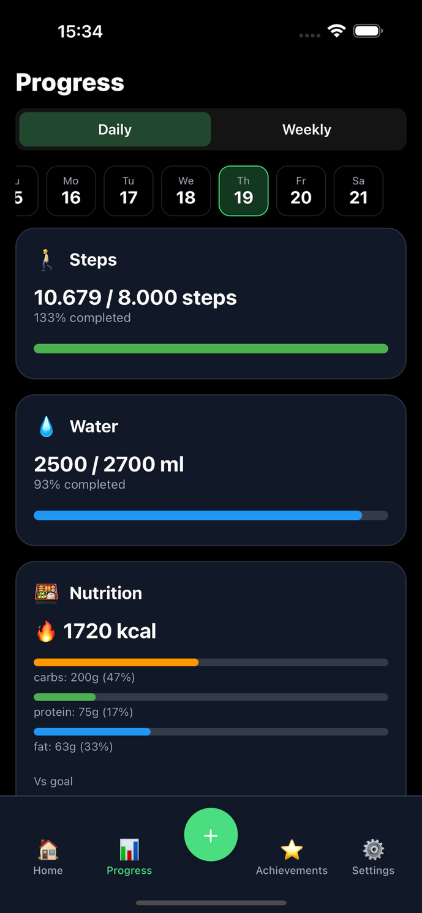
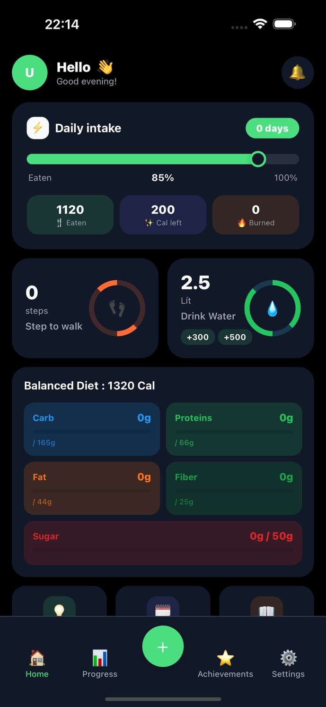
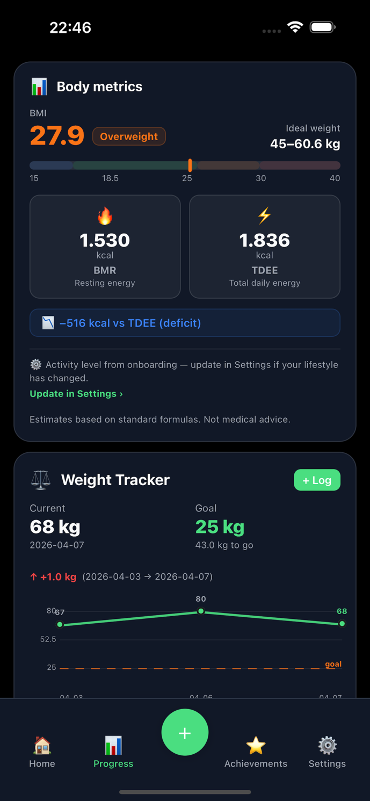

01
AI meal scanning
Take a photo and get an estimated breakdown of foods, calories and macronutrients in seconds.
AI-powered nutrition, made practical
Photograph your food, understand its nutrition, and keep your daily habits in one focused place. Nutrica turns everyday meals into clear, useful insights.


One photo
Clear nutrition
Better daily decisions
Built around real life
Nutrica brings food, movement, hydration and progress together without turning wellbeing into a spreadsheet.
Take a photo and get an estimated breakdown of foods, calories and macronutrients in seconds.
See calories, protein, carbs, fats, fibre and sugar against your daily goals.
Follow nutrition, water, weight and activity trends, with step data from Apple Health.
Set targets that fit your routine and review weekly signals that help you stay consistent.
From plate to pattern
Use your camera or choose an existing image.
Use the result as practical guidance for your daily log.
See nutrition, hydration and activity trends together.

Responsible by design
Nutrica identifies AI-powered features so users know when an estimate is generated.
Results are presented as estimates so users can interpret them carefully and make their own choices.
Nutrica provides general nutrition information and does not replace medical advice or professional care.
Data is used to deliver requested features and is handled according to our published privacy policy.
Independent & bootstrapped
Nutrica is an independent mobile product founded in 2026 by Nguyen Quang Hung. The app is live on the App Store and is being developed for people who want a faster, more approachable way to understand their nutrition.
Your next meal is a data point
Start with a photo. Build a clearer view of your everyday nutrition.
● Download on theApp Store